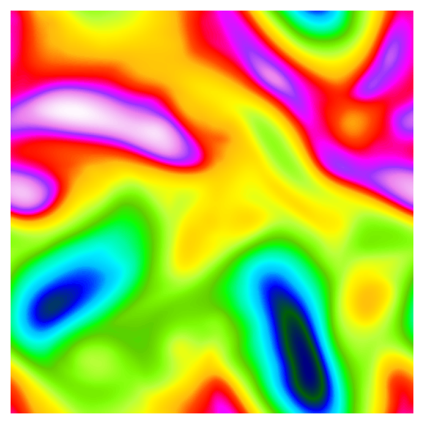

MOM6 ACCESS Workshop
Marshall Ward
NOAA-GFDL
2024-11-13
- Managing the MOM6 Codebase
-
Within ACCESS and across the consortium
- Contributing to MOM6
-
How GFDL tests and approves pull requests
- Preservation of solutions
-
How bit reproducibility is used to preserve answers
MOM6 Consortium

|
Codebase is governed by a consortium of research groups. Changes to the inner circle are tracked and preserved. Nodes manage how users contribute to their repos. |
Consortium Branches
main-
Public release, hosted at
mom-ocean/MOM6 dev/{gfdl,ncar,access,...}-
Research nodes. Commits in
dev/*will be inmain - User forks
-
Actual model development, commits are rebased into
dev/*
Contribution Rules
Every node can modify code as needed, within limits:
Code must not change existing solutions
Rigorous testing and code review
History must be preserved
Only merge commits between
mainanddev/*
GFDL PR life Cycle
- User submits PR to node
- Automated verification testing
- Code review (by a human)
- Test for regressions on production machine
- Rebase into node repository
Verification Testing
This should run on any system, any compiler:
$ git clone https://github.com/mom-ocean/MOM6.git --recursive
$ cd MOM6/.testing
$ make -j test- Code is documented, looks "pretty"
- Unit tests are passing
- Solutions are invariant to various tests
- Restart (2\(\Delta \tau\) run = 2 x 1\(\Delta \tau\) run)
- CPU Layout (1x1 = 2x1 = 1x2)
- ...
Memory Grids
Symmetric: 
|
Nonsymmetric: |
Dimensional
| \[\begin{aligned} \mathbf{u}_t + \mathbf{u} \cdot \nabla \mathbf{u} &= -g \nabla h \\ h_t + \nabla \cdot \left( h \mathbf{u} \right) &= 0 \\ \end{aligned}\] |
|
Answers should be unchanged after scaling
Rotation
Equations should be invariant to rotation
|  |  |
Internally, the data is reordered
Invariant stencils
\(\phi^{(c)}_{i,j} = \frac{1}{4} (\phi_A + \phi_B + \phi_C + \phi_D)\)
\(\frac{1}{4} ( ({\color{LightCoral}{\phi_A}} + {\color{LightCoral}{\phi_B}}) + ({\color{LightSkyBlue}{\phi_C}} + {\color{LightSkyBlue}{\phi_D}}) )\) \(\frac{1}{4} ( ({\color{LightCoral}{\phi_A}} + {\color{LightSkyBlue}{\phi_C}}) + ({\color{LightCoral}{\phi_B}} + {\color{LightSkyBlue}{\phi_D}}) )\) |
|
| \(\frac{1}{4} ( ({\color{LightCoral}{\phi_A + \phi_D}}) + ({\color{LightSkyBlue}{\phi_B + \phi_C}}) )\) |
Miscellaneous
Static memory allocation
OpenMP
Can loops be threaded?
Randomized Initialization
i.e. has data been properly initialized?
Verification Testing
CI testing is platform independent
Regression Suite
Validate 61 tests using 3 compilers
Test Output
ocean.stats
Step Days Energy/Mass [m2 s-2] Mean Sea Level [m] ...
0 0.00 7.2161166068132286E-27 1.8190E-12 ...
12 0.50 2.7781004671136538E-04 1.1369E-12 ...
24 1.00 2.7734897826598717E-04 1.8190E-12 ...chksum_diag
u-point: ocean_model-u
min = -6.7187595818683776E-03 max = 3.3480219779204019E-02
mean = 1.1239682303793666E-04 bits = 21851
v-point: ocean_model-v
min = -8.3469699425156359E-03 max = 6.8420831486068704E-03
mean = 1.2076392816784489E-03 bits = 18606
h-point: ocean_model-h
min = 9.9999999999999915E-04 max = 5.6265092225099863E+02
mean = 3.6490088139048595E+02 bits = 18673
...Bit Reproducibility
- Ambiguous Arithmetic
-
x + y + z - Fortran Intrinsics
-
sum(),sin(),matmul(),a**b - Operating System
-
System math libraries may define
sin() - Fused multiply-add
-
a*b + c
Floating Point Review

\[\phi = (-1)^{\color{yellow} s} \times 2^{\color{aquamarine} M} \times (1 + {\color{pink} \alpha})\]
- Smallest fractional diff: \(\color{yellow}{2^{-52} \approx 2.2 \times 10^{-16}}\)
- 17 digits to uniquely specify a result
Float Order-of-Operations
What is \(10^{-16} + 1 - 1\)? Ambiguous!
\[\begin{aligned} (10^{-16} + 1) - 1 &\equiv 0 \\ 10^{-16} + (1 - 1) &= 10^{-16} \end{aligned}\]
Residuals below ULP \(\left(2 \times 10^{-16}\right)\) are lost.
Use parentheses to set the order of operations
Transcendentals
How is sin(x) computed? Ambiguous!
\[f(48^\circ) = 2 \Omega \sin \left( \frac{48 \pi}{180} \right)\]
glibc 2.22: 0.108381727637274115E-03 (3F1C695FE71A3FE4)
2.26: 0.108381727637274128E-03 (3F1C695FE71A3FE5)Avoid transcendentals where possible, manage dependencies when necessary.
Global Summation
The order of sum() is ambiguous!
Parentheses work, but may have cumulant errors:
\[\sum{\phi} = \phi_1 + (\phi_2 + ( \phi_3 + ... ))\]
Sums are stored in fixed-precision using six integers:
What we Don't require
When can answers differ?
- Aggressive optimization (
-O3 -mavx ...) - Hardware (Intel, AMD, ARM64, ...)
- Compilers (
gcc,ifort, ...) - Libraries (
libm.a, ...)
But we still try to maximize reproducibility.
Descriptive Commits
commit d210cc6cdfd03150306c8ba41612e3380d66c281
Author: Robert Hallberg <Robert.Hallberg@noaa.gov>
Date: Wed Aug 16 17:11:35 2023 -0400
+Remove build_grid_arbitrary
Removed the unused (and unusable) routine build_grid_arbitrary.
This routine could not have been used because it had a hard-coded
STOP call, and comments in it indicated that it should have been
deleted in July, 2013. The run-time parameter setting that would
have triggered a call to this routine has been retained for now,
but with a fatal error message explaining that this routine has
not been implemented. All answers are bitwise identical in any
cases that ran before.
commit 615e57f854db8be8c75a9edba6bb05e3f04a6eb7
Author: raphael dussin <raphael.dussin@gmail.com>
Date: Sat Oct 28 15:09:45 2023 -0400
extension to the internal tides module (#481)
the module in now able to read in tidal velocities for different
tidal harmonics and distribute the energy and distribute TKE input over
the different vertical modes. This involves upsizing dimensions of
several arrays and mofiying some API. internal_tide_input_CS is
promoted to public to facilitate the passing of energy input to
MOM_internal_tides
commit ddb88f8c2fb36ce282cfdb34739a1c37ed369abd
Author: Cory Spencer Jones <spencerjones@tamu.edu>
Date: Mon Oct 16 11:33:26 2023 -0500
+Add timestamp and directory to particles restart
The directory, time and timestamp variables are needed by the
particle code in order to write better restart files. I have changed
the particles_save_restart interface to add these variables. I have
also removed the option to pass temperature and salinity to
particles_save_restart, because these variables are not useful for
restart.
commit 503a9f4c5f585e258a3d5810cad0b4af073c4fb8
Author: Alex Huth <huthalexandere@gmail.com>
Date: Fri Oct 27 06:59:36 2023 -0400
ice shelf front advection: When determining a reference thickness
for a partially-filled cell, add the reference thickness
contribution from a neighboring filled cell proportionate to its
flux into the partially-filled cell. This is more accurate than
simply taking the average thickness of all neighboring filled cells.
Also fixed incorrect bounds. (#475)
commit f514529a8a299b8e84512a10062aa524f0a23478
Author: Alex Huth <huthalexandere@gmail.com>
Date: Thu Oct 26 15:11:12 2023 -0400
Ice sheet thickness boundary condition (#474)
* allow for assigned ice shelf thickness where hmask==3, but still
solve for ice sheet velocity
No "fixed my typo" commits
|
Linus Torvalds, Linux OSS 2020
A Rebased History
We rebase user commits into Rebased user commits have different hashes (or "history"!) (Not every user is happy about this!!) |
A Tangled History
Having many active users leads to a non-sequential history This severely complicates our ability to track bugs and regressions! |
Submission to main

All nodes must approve each PR to main
Merges to Main
|
Summary
- Code preservation?
-
- Mutual governance by a consortium of groups
- Preserve existing solutions?
-
- Regression and self-consistency testing
- Restrict model to non-ambiguous operations